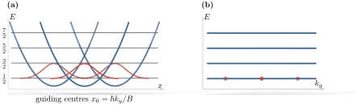
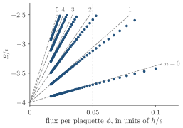

Page 6 of 13 of this session
4.9 Landau levels of Schrödinger electrons
What is the spectrum of a free electron in a uniform magnetic field? We will now see that each momentum \(k_y\) gives the same harmonic oscillator, only placed at another position. So the levels (4.6) are flat bands, and each of them holds one state per flux quantum through the sample.
\[\boldsymbol{\pi} = \mathbf{p} - e\mathbf{A}, \tag{4.3}\]
This is minimal coupling, from Section 4.7. The magnetic field \(\mathbf B=\nabla\times\mathbf A\) enters the Hamiltonian through the kinetic momentum \(\boldsymbol\pi\), also called the mechanical momentum, where \(\mathbf p\) is the canonical momentum and \(\mathbf A\) the vector potential. The carriers have the charge \(+e\).
Let us now solve for the spectrum, and let us start with the simplest case. These are free electrons with no lattice and no potential apart from the field itself, and with dispersion \(p^2/2m\) before we switch on the field. With minimal coupling and the Landau gauge \(\mathbf{A}=(0,Bx,0)\) we have
\[H = \frac{\pi_x^2+\pi_y^2}{2m} = \frac{p_x^2}{2m} + \frac{(p_y-Bx)^2}{2m}. \tag{4.5}\]
We take the charge of the carriers to be \(+e\) in (4.3) and we set \(e=1\) in all this session, while we keep \(\hbar\) explicit. This is a choice of convention, but it has consequences, since it fixes \([\pi_x,\pi_y]=+i\hbar^2/\ell_B^2\). The ladder operators of Section 4.10 and the holomorphic wavefunctions of Section 4.13 are built on this convention. For an electron, which has charge \(-e\), every cyclotron orbit and every edge current below goes around in the other direction. The states of the lowest Landau level in the symmetric gauge of Section 4.13 are then functions of \(\bar z\) and not of \(z\). The zero mode of the Dirac levels of Section 4.10 also moves, from the upper component of the spinor to the lower one.
Since \(\mathbf{A}\) does not depend on \(y\), we have \([H,p_y]=0\), so we can look for eigenstates of the form \(\psi(x,y) = e^{ik_y y}\phi(x)\). With the replacement \(p_y\to\hbar k_y\), the Hamiltonian (4.5) becomes a one-dimensional problem in \(x\),
\[H\phi(x) = \left[\frac{p_x^2}{2m} + \frac{B^2}{2m}\Big(x-\frac{\hbar k_y}{B}\Big)^2\right]\phi(x),\]
which is exactly the Hamiltonian of a quantum harmonic oscillator centered at \(x_0 = \hbar k_y/B\), with frequency \(\omega_c = B/m\), the cyclotron frequency. The shift of the center is removed with the change of variable \(x\to x-x_0\). When we solve it with the same ladder operators as the ordinary harmonic oscillator we obtain the Landau levels.
The Landau levels of Schrödinger electrons are
\[E_n = \hbar\omega_c\left(n+\frac{1}{2}\right), \qquad n=0,1,2,\dots, \tag{4.6}\]
with \(\omega_c=B/m\). The energy does not depend on \(k_y\), so each level is a flat band, and in a sample of area \(A\) it holds \(BA/(h/e)\) states, one for each flux quantum \(h/e\) through the sample.
The steps From the Hamiltonian (4.5) to the Landau levels (4.6)
Let us take first \(k_y=0\). The term \((p_y-Bx)^2\) becomes \(B^2x^2\), and (4.5) is
\[H=\frac{p_x^2}{2m}+\frac{B^2}{2m}\,x^2=\frac{p_x^2}{2m}+\frac12\,m\omega_c^2\,x^2, \qquad \omega_c=\frac{B}{m},\]
since \(B^2/2m=\tfrac12m(B/m)^2\). This is the harmonic oscillator with the frequency \(\omega_c\), centered at \(x=0\), so its levels are \(\hbar\omega_c(n+\tfrac12)\).
For any \(k_y\) we complete the square,
\[(\hbar k_y-Bx)^2=B^2\Big(x-\frac{\hbar k_y}{B}\Big)^2=B^2(x-x_0)^2,\]
meaning that the oscillator keeps its frequency and only its center moves, to \(x_0=\hbar k_y/B=k_y\ell_B^2\) with \(\ell_B^2=\hbar/B\). The change of variable \(x'=x-x_0\) does not change \(p_x=-i\hbar\,\partial_x\), so the levels are the same as for \(k_y=0\), which is (4.6) for every \(k_y\). The state of the level \(n\) is \(e^{ik_yy}\phi_n(x-x_0)\), with \(\phi_n\) the oscillator state, and for \(n=0\) it is the Gaussian \(e^{-(x-x_0)^2/2\ell_B^2}\).
The energy (4.6) does not depend on \(k_y\) at all. Every value of \(k_y\), or in other words every choice of the guiding center \(x_0\), gives the same energy. This is the reason why the Landau levels are flat bands, and why each of them has a macroscopic degeneracy that is proportional to the area of the sample. Figure 4.3 shows this mechanism directly, with the same well placed at different positions, and with the degeneracy counted as one orbital for each flux quantum through the sample. When we put in the real physical constants for a field typical of GaAs, we obtain the millielectronvolt scale that we gave in Section 4.1.

On a lattice the same levels appear at the bottom of a band, where the dispersion is parabolic, and Schematic 4.6 shows them for the square lattice. They are computed with pyqula as a function of the flux through one plaquette, which is the Landau fan of the notebook.

g3_landau_fan_square.py
The energy (4.6) does not depend on \(k_y\). What does \(k_y\) fix instead?
\[E_n = \hbar\omega_c\left(n+\frac{1}{2}\right), \qquad n=0,1,2,\dots, \tag{4.6}\]
Show the answers
- A. ✗ False
This is false. The frequency \(\omega_c=B/m\) depends on the field and the mass. Two states with \(k_y=0\) and \(k_y=5/\ell_B\) have the same \(\omega_c\).
- B. ✗ False
This is false. For a fixed \(n\) all the values of \(k_y\) give the same energy, which is the degeneracy of the level. Then \(k_y\) cannot decide \(n\).
- C. ✓ True
This is true. A change of \(k_y\) shifts the oscillator well along \(x\) and does not change its curvature. The same ladder of levels is then found at every position.
A sample has the area \(A\). How does the number of states in one Landau level depend on \(A\) and \(B\)?
Show the answers
- A. ✗ False
This is false. For \(A=1\,\mu\mathrm{m}^2\) there are about 242 flux quanta at 1 T and about 484 at 2 T. The number of states doubles when the field doubles.
- B. ✗ False
This is false. This law gives half of the states when the field doubles, about 121 instead of 484 for the sample of \(1\,\mu\mathrm{m}^2\) going from 1 T to 2 T. A stronger field gives more flux quanta.
- C. ✓ True
This is true. A stronger field gives more flux quanta through the same area, and every flux quantum adds one orbital. This is why the degeneracy grows with the area and with the field.
A Landau level holds one state for each flux quantum \(h/e\) through the sample. How many states does it hold per unit area?
Show the answers
- A. ✓ True
This is true. The flux per unit area is \(B\), and we divide it by the flux quantum \(h/e\). At \(1\) T this is \(241.8\) states per \(\mu\mathrm m^2\), the same for every mass.
- B. ✗ False
This is false. This is an area, \(4136\,\mathrm{nm}^2\) at \(1\) T, and it gets smaller when the field grows. It is the area that one state takes, and not the number of states per unit area.
- C. ✗ False
This is false. This is \(\omega_c/2\pi\), a frequency, which is \(418\) GHz for the mass \(0.067\,m_e\) of GaAs at \(1\) T. It depends on the mass, while the number of states of a level does not.
A sample has the size \(L_x\times L_y\) and is periodic along \(y\), so \(k_y=2\pi j/L_y\) with \(j\) an integer. In the Landau gauge each \(k_y\) gives one state of a level, centered at \(x_0=\hbar k_y/B\). Count the values of \(k_y\) whose guiding center lies inside the sample, \(0\le x_0<L_x\), and give the number for an area of \(1\,\mu\mathrm m^2\) at \(1\) T.
Solution
The guiding center is inside the sample when \(0\le k_y<BL_x/\hbar\). The values of \(k_y\) are spaced by \(2\pi/L_y\), so their number is
\[N=\frac{BL_x/\hbar}{2\pi/L_y}=\frac{BL_xL_y}{2\pi\hbar}=\frac{BA}{h},\]
with \(A=L_xL_y\) the area. With the charge written again, \(N=BA/(h/e)\), which is the flux through the sample in units of the flux quantum \(h/e=4.14\times10^{-15}\) T m\(^2\). For \(A=1\,\mu\mathrm m^2\) and \(B=1\) T we get \(N=241.8\), and the count of the integers \(j\) gives \(242\). The mass does not enter, so every Landau level of every parabolic band holds the same number of states.
This is the number of electrons that one filled level holds. A sample with the density \(n\) then fills \(\nu=nh/(eB)\) levels, and this filling is what the Hall plateaus count when the field is swept.
Try it. Run the cell, which shows the density of states of the bulk for the three fields. Measure the distance between the first two peaks in each panel. It grows roughly in proportion to B, as the cyclotron energy of (4.6) does.
- In Section 4.12 the same oscillator appears without any choice of gauge, as (4.8).
- In Section 4.16 the large degeneracy of a Landau level, one orbital per flux quantum, is what lets a fractional filling form the Laughlin state.
- In Section 6.6 a flat band, with its large density of states, makes the Stoner criterion easy to satisfy.